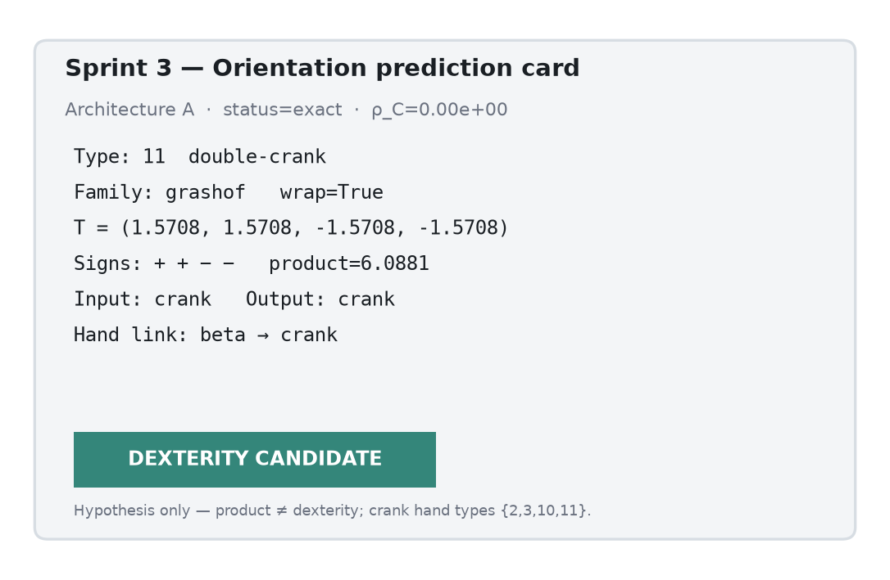
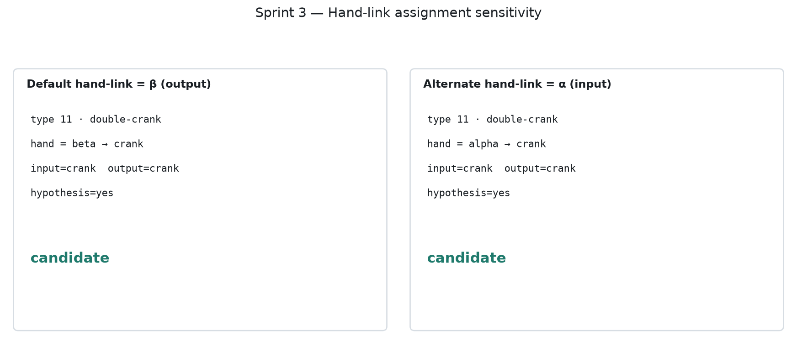
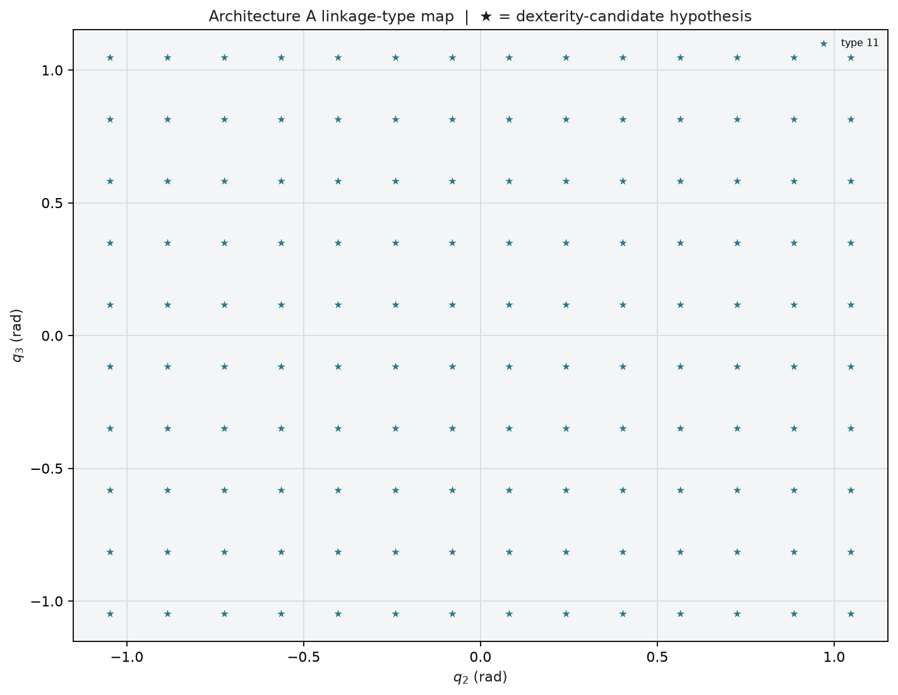

McCarthy–Soh classification on residual-gated reductions. Dexterity candidates require a hand-crank type — never the Grashof product alone.
Default hand-orientation link is output β. Types {2, 3, 10, 11} are a working hypothesis only. Toggle α to see assignment sensitivity.
Single Architecture A home-state record with Tᵢ, signs, and hypothesis badge.


Linkage type over a (q₂, q₃) workspace slice. ★ marks hypothesis candidates under β.
